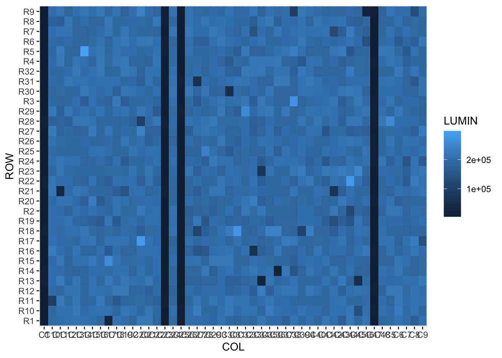

Week 4. Part 2
7.5 Analyse Plate 1
With the skills for automation in hand, we will now analyse the first plate from the screening assay.
We aim to identify the screening ‘hits’ using both data visualization and statistics.
First we load the tidyverse library and read the raw data (in .csv format) into a variable called ‘screen_plate’
library(tidyverse)
screen_plate <- read_csv('~/Desktop/WEHI_tidyR_course/screening_plates/PLATE1.csv')We can check the dimensions of the data frame using dim(), and read the first 6 rows using head()
screen_plate %>% dim()## [1] 32 49screen_plate %>% head()## # A tibble: 6 x 49
## ROW C1 C2 C3 C4 C5 C6 C7 C8 C9 C10 C11 C12 C13 C14 C15
## <chr> <dbl> <dbl> <dbl> <dbl> <dbl> <dbl> <dbl> <dbl> <dbl> <dbl> <dbl> <dbl> <dbl> <dbl> <dbl>
## 1 R1 6174. 187493. 211526 205900 197694 209756 201435 174091 205579 196761 204813 208347 211597 205923 204272
## 2 R2 6368. 197641. 190814 200780 216758 214997 185684 203572 199878 201356 198175 182754 208372 197970 208768
## 3 R3 6959. 193279. 215258 197533 217146 191428 200699 198098 184296 194705 186234 192012 203523 169934 208062
## 4 R4 6106. 185390. 186948 210031 213270 208650 175096 195469 194506 200694 223320 184593 213273 206714 187451
## 5 R5 5919. 201540. 204239 185185 217024 195054 164089 209650 190217 190350 229037 190626 186747 297238 210835
## 6 R6 5408. 203746. 220773 197154 204712 166208 194040 176697 218824 199691 194497 201629 190948 186914 196896
## # … with 33 more variables: C16 <dbl>, C17 <dbl>, C18 <dbl>, C19 <dbl>, C20 <dbl>, C21 <dbl>, C22 <dbl>,
## # C23 <dbl>, C24 <dbl>, C25 <dbl>, C26 <dbl>, C27 <dbl>, C28 <dbl>, C29 <dbl>, C30 <dbl>, C31 <dbl>,
## # C32 <dbl>, C33 <dbl>, C34 <dbl>, C35 <dbl>, C36 <dbl>, C37 <dbl>, C38 <dbl>, C39 <dbl>, C40 <dbl>,
## # C41 <dbl>, C42 <dbl>, C43 <dbl>, C44 <dbl>, C45 <dbl>, C46 <dbl>, C47 <dbl>, C48 <dbl>So we have a 32-row x 49-column data frame, and using head() we can see that all except the first column are numeric data (you should double-check this using the str() command, which reveals the type of data in each column).
The column names are designated C1, C2, C3 etc, and row identifier column ROW contains R1, R2, R3 etc.
7.6 Plotting the data
Its good practice to look at your entire dataset rather than just relying on statistical summaries. Data visualization will reveal things about your data that basic summary statistics will not. For a nice exposition of this idea, see this dinasaur-related blog post.

Given that the 1536-well plate is a grid, we want to make a plot that retains the 2-dimensional features of the plate, showing the relative location of each well.
The ggplot geom_tile() is the best solution for doing this. Let’s grab the example code from the help page
?geom_tile()
#Copy and paste the code to make a toy data frame
df <- data.frame(
x = rep(c(2, 5, 7, 9, 12), 2),
y = rep(c(1, 2), each = 5),
z = factor(rep(1:5, each = 2)),
w = rep(diff(c(0, 4, 6, 8, 10, 14)), 2)
)
#Run the 2nd example
ggplot(df, aes(x, y, width = w)) +
geom_tile(aes(fill = z), colour = "grey50")For screen_plate, we want the ROW ID of the dataframe represented on the y axis, and the columns along the x axis. The raw luminescence values will be used as the colour fill for each tile (as for column ‘z’ above). Therefore we need a dataframe with only 3 columns: corresponding to the x, y, and fill aesthetics. To achieve this we need to reshape the dataframe.
Let’s use pivot_longer() to create a long-format version of the data (“plate_long”). We keep the ROW column as is, and create two new columns: containing the current column IDs (‘COL’), and the respective luminescence values (‘LUMIN’).
plate_long <- screen_plate %>%
pivot_longer(cols = starts_with('C'), names_to = 'COL', values_to = 'LUMIN')Now we can make the first plot
plate_long %>% ggplot(aes(x=COL,y=ROW)) + geom_tile(aes(fill=LUMIN))
The structure in the data is clear, but the rows and columns are all jumbled. This is because they are currently character data, and would work better as integers (numeric data).
7.6.1 str_remove() helper
To convert the ROW and COL data to numeric, its easiest to remove the letters from the data using str_remove(). str_remove() requires first the column name to modify, and the ‘pattern’ (in our case the letter) to remove.
This function, and other str_ family functions, are often used inside mutate() to create a new column containing the resulting data. However, they can be used to modify a vector of text values, as you will see later in the extract filenames section.
plate_long %>% mutate(ROW_num = str_remove(ROW,'R'))## # A tibble: 1,536 x 4
## ROW COL LUMIN ROW_num
## <chr> <chr> <dbl> <chr>
## 1 R1 C1 6174. 1
## 2 R1 C2 187493. 1
## 3 R1 C3 211526 1
## 4 R1 C4 205900 1
## 5 R1 C5 197694 1
## 6 R1 C6 209756 1
## 7 R1 C7 201435 1
## 8 R1 C8 174091 1
## 9 R1 C9 205579 1
## 10 R1 C10 196761 1
## # … with 1,526 more rows7.6.2 as.numeric() helper
ROW_num is still character data! We need to run a second mutate with as.numeric() to convert ROW_num into numeric data:
plate_long %>%
mutate(ROW_num = str_remove(ROW,'R')) %>%
mutate(ROW_num = as.numeric(ROW_num))## # A tibble: 1,536 x 4
## ROW COL LUMIN ROW_num
## <chr> <chr> <dbl> <dbl>
## 1 R1 C1 6174. 1
## 2 R1 C2 187493. 1
## 3 R1 C3 211526 1
## 4 R1 C4 205900 1
## 5 R1 C5 197694 1
## 6 R1 C6 209756 1
## 7 R1 C7 201435 1
## 8 R1 C8 174091 1
## 9 R1 C9 205579 1
## 10 R1 C10 196761 1
## # … with 1,526 more rowsWe now add two more mutate commands to achieve the same result for the COL IDs, and assign the results to plate_long_num
plate_long_num <- plate_long %>%
mutate(ROW_num = str_remove(ROW,'R')) %>% mutate(ROW_num = as.numeric(ROW_num)) %>%
mutate(COL_num = str_remove(COL,'C')) %>% mutate(COL_num = as.numeric(COL_num))Now let’s run ggplot using the ROW_num and COl_num columns:
plate_long_num %>%
ggplot(aes(x=COL_num,y=ROW_num)) + geom_tile(aes(fill=LUMIN))
This is looking better. Finally for this plot we can use two scaling commands to
a) change the fill colours a colour-blind-friendly palette that accentuates the high and low values: scale_fill_viridis_c(),
b) and reverse the y axis to mimic the plate coordinates: scale_y_reverse()
plate_long_num %>%
ggplot(aes(x=COL_num,y=ROW_num)) +
geom_tile(aes(fill=LUMIN)) +
scale_fill_viridis_c() +
scale_y_reverse()Now please create a new folder within WEHI_tidyR_course/ for the analysis results, called ‘screening_results’. Let’s save the current plot into the new folder using ggsave()
ggsave('~/Desktop/WEHI_tidyR_course/screening_results/plate_tileplot.pdf',
width=6, height=3.5)7.7 Statistical summary
We can now see there are four entire columns of very low luminescence in screen_plate, corresponding to dead cells. These are the positive controls in columns 1,23,25 and 47. There are also four negative control columns (DMSO-treated cells) at positions 2, 24, 26 and 48. These should be happy and healthy.
Our task is to identify wells with luminescence values > 4 standard deviations from the mean (defined by negative controls), corresponding to a p value < 0.01.
To find these we should first label the columns in the long-format dataframe as ‘test’, ‘posCTRL’ or ‘negCTRL’. Here we use case_when() and the %in% helper to create a column of labels named ‘well_tag’:
plate_long_num %>%
mutate(well_tag = case_when(COL_num %in% c(1,23,25,47) ~ 'posCTRL',
COL_num %in% c(2,24,26,48) ~ 'negCTRL',
TRUE ~ 'test'))## # A tibble: 1,536 x 6
## ROW COL LUMIN ROW_num COL_num well_tag
## <chr> <chr> <dbl> <dbl> <dbl> <chr>
## 1 R1 C1 6174. 1 1 posCTRL
## 2 R1 C2 187493. 1 2 negCTRL
## 3 R1 C3 211526 1 3 test
## 4 R1 C4 205900 1 4 test
## 5 R1 C5 197694 1 5 test
## 6 R1 C6 209756 1 6 test
## 7 R1 C7 201435 1 7 test
## 8 R1 C8 174091 1 8 test
## 9 R1 C9 205579 1 9 test
## 10 R1 C10 196761 1 10 test
## # … with 1,526 more rowsLet’s store the new data_frame as plate_tagged, and count the number of each type of well.
plate_tagged <- plate_long_num %>%
mutate(well_tag = case_when(COL_num %in% c(1,23,25,47) ~ 'posCTRL',
COL_num %in% c(2,24,26,48) ~ 'negCTRL',
TRUE ~ 'test'))
plate_tagged %>% count(well_tag)## # A tibble: 3 x 2
## well_tag n
## <chr> <int>
## 1 negCTRL 128
## 2 posCTRL 128
## 3 test 1280Now we calculate the mean and standard deviation for the negative control wells only, and assign this summary to ‘neg_summ’
neg_summ <- plate_tagged %>%
filter(well_tag=='negCTRL') %>%
summarize(mean_neg = mean(LUMIN),
sd_neg= sd(LUMIN))7.7.1 pull()
For a single round of analysis, we might copy these statistics directly into an equation. However here we want the entire analysis to be repeatable on different input datasets, and so can’t have any ‘hard-coded’ numeric values.
To allow the mean and sd to have different values according to the input data, they have to be stored in variables which are then used in a z-score calculation. We need to extract each into a single-value vector. The pull() function is a handy way to ‘pull’ the values in a dataframe column out into a vector.
meanNeg <- neg_summ %>% pull(mean_neg)
sdNeg <- neg_summ %>% pull(sd_neg)7.8 Identify hits
Now let’s use the single values calculated for the mean and standard deviation of negative control wells in a mutate() command and calculate the z score for each well
plate_tagged %>% filter(well_tag=='test') %>%
mutate(z_score = (LUMIN - meanNeg) / sdNeg) ## # A tibble: 1,280 x 7
## ROW COL LUMIN ROW_num COL_num well_tag z_score
## <chr> <chr> <dbl> <dbl> <dbl> <chr> <dbl>
## 1 R1 C3 211526 1 3 test 1.24
## 2 R1 C4 205900 1 4 test 0.684
## 3 R1 C5 197694 1 5 test -0.130
## 4 R1 C6 209756 1 6 test 1.07
## 5 R1 C7 201435 1 7 test 0.241
## 6 R1 C8 174091 1 8 test -2.47
## 7 R1 C9 205579 1 9 test 0.652
## 8 R1 C10 196761 1 10 test -0.222
## 9 R1 C11 204813 1 11 test 0.576
## 10 R1 C12 208347 1 12 test 0.927
## # … with 1,270 more rowsWe can store the result in a data frame ‘plate_zScores’, and make a quick density plot of the z scores to check the distribution (it should be normal and centred on 0)
plate_zScores <- plate_tagged %>%
filter(well_tag=='test') %>%
mutate(z_score = (LUMIN - meanNeg) / sdNeg) Lastly we will create a results table called ‘hits’ for the wells with z scores < -4. These are the wells where the cells are dead or dying. There may also be wells where cells are growing better than controls (z > 4). We will not consider those wells here.
#use < (-4) to avoid typing the assignment operator
hits <- plate_zScores %>% filter(z_score < (-4) )And use write_csv() to save it in the to the screening_results folder:
write_csv(hits, path = '~/Desktop/WEHI_tidyR_course/screening_results/plate_hits.csv')